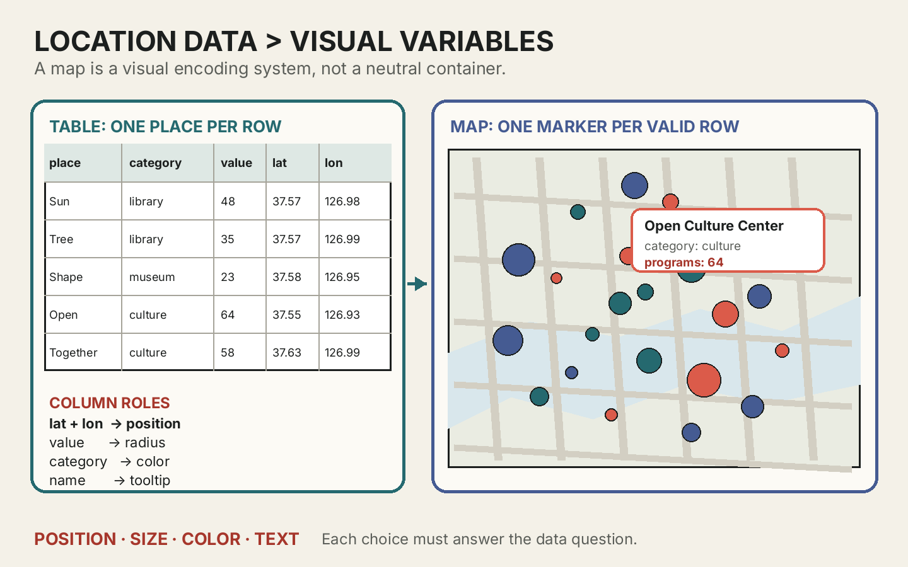
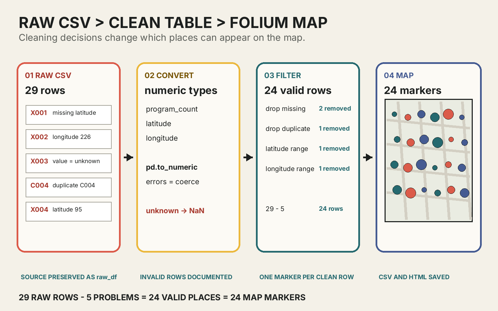

정리된 표를 책임 있는 지도 시각화의 설계도로 읽기
오늘의 학습 목표
- 장소 한 곳이 표의 한 행과 지도 마커 하나로 연결되는 과정을 설명할 수 있습니다.
- 바탕지도와 데이터 레이어의 역할을 구분할 수 있습니다.
- 위도와 경도의 뜻, 값의 범위, Folium에서 사용하는 좌표 순서를 설명할 수 있습니다.
- 위치·크기·색상·문자에 각각 어떤 데이터 열을 연결해야 하는지 판단할 수 있습니다.
- 결측 좌표, 범위를 벗어난 좌표, 숫자가 아닌 수치, 중복 행이 지도에 미치는 영향을 설명할 수 있습니다.
- 개인을 식별할 수 있는 위치를 제외하고 데이터와 바탕지도의 출처를 기록할 수 있습니다.
- 0-5분9주차 연결
읽은 표를 지도용 표로 좁혀 봅니다.
- 5-13분지도의 두 층
바탕지도와 데이터 레이어를 구분합니다.
- 13-23분위도와 경도
좌표의 뜻·범위·순서를 익힙니다.
- 23-33분시각적 인코딩
열을 위치·크기·색상·문자에 연결합니다.
- 33-41분오류의 결과
잘못된 행이 지도에 만드는 문제를 읽습니다.
- 41-50분책임 있는 지도
개인정보·누락·출처·이용 조건을 점검합니다.
- 50-60분확장 설계
공공 위치 데이터의 지도 명세를 작성합니다.
수업 운영: 기본 50분과 확장 60분
기본 50분에는 위치 데이터의 구조, 좌표, 시각적 인코딩, 오류, 개인정보와 출처까지 다룹니다. 모든 개별 확인이 빠르게 끝난 경우에만 50-60분 확장에서 새로운 공공 위치 데이터의 지도 명세를 작성합니다. 실제 Folium 코드는 2교시에서 한 줄씩 실행합니다.
프로그래밍을 몰라도 먼저 붙잡을 문장
지도 마커 하나는 표의 유효한 한 행이며, 마커의 위치·크기·색상·설명은 서로 다른 열의 값을 보여 줍니다. 먼저 무엇을 어디에 연결할지 결정한 뒤 코드를 작성합니다.
0-5분 · 9주차의 DataFrame을 지도용 표로 좁히기
9주차에는 CSV를 DataFrame으로 불러오고 한 행, 한 열, 자료형, 결측값을 읽었습니다. 또한 데이터의 제목, 출처, 관찰 단위와 답할 수 있는 질문을 기록했습니다. 10주차에는 같은 읽기 순서를 유지하면서 위치가 있는 데이터로 범위를 좁힙니다.
| 열 | 의미 | 예시 값 | 지도에서의 역할 |
|---|---|---|---|
place_id | 장소를 중복 없이 구분하는 식별자 | C001 | 중복 장소 확인 |
place_name | 사람이 읽는 장소 이름 | 햇살도서관 | 툴팁과 팝업의 제목 |
category | 장소의 종류 | 도서관 | 마커 색상 |
program_count | 한 기간에 운영한 프로그램 수 | 48 | 마커 크기 |
latitude | 남북 방향의 위치 | 37.5665 | 마커 위치의 첫 번째 값 |
longitude | 동서 방향의 위치 | 126.9780 | 마커 위치의 두 번째 값 |
이번 표의 관찰 단위는 공공시설 한 곳입니다. 따라서 한 시설은 한 행에 기록하고, 유효한 한 행은 지도 마커 하나가 됩니다. 한 셀에 시설 세 곳의 이름을 함께 쓰거나 한 시설을 이유 없이 여러 행에 반복하면 이 대응 관계가 깨집니다.
수업용 CSV는 실제 기관 목록이 아니다
다운로드 파일의 장소명, 프로그램 수와 좌표 조합은 정제와 시각화 연습을 위해 만든 가상 자료입니다. 실제 기관의 현황을 설명하거나 의사결정에 사용하지 않습니다. 실제 공공데이터를 사용할 때는 제공 기관의 원본과 메타데이터를 다시 확인해야 합니다.
확인: 시설 한 곳에 프로그램이 여러 개라면 반드시 여러 행으로 나누는가?
이번 표의 관찰 단위가 “시설 한 곳”이고 program_count가 프로그램의 총개수라면 시설당 한 행을 유지합니다. 관찰 단위를 “프로그램 한 개”로 바꾸면 프로그램마다 한 행을 만들 수 있습니다. 먼저 관찰 단위를 정한 뒤 행의 구조를 결정합니다.
5-13분 · 지도는 바탕지도와 데이터 레이어가 겹쳐진 결과다
Folium 지도를 보면 도로, 강, 행정 구역과 장소 마커가 한 화면에 보입니다. 그러나 모두 같은 데이터에서 나온 것은 아닙니다. 바탕지도는 위치를 읽을 수 있는 지리적 맥락을 제공하고, 데이터 레이어는 우리가 CSV에서 선택해 올린 장소와 값을 보여 줍니다.
도로·강·지명·경계처럼 장소의 주변을 읽게 하는 배경입니다.
정제된 행을 마커로 바꾸고 수치와 범주를 시각적으로 표현합니다.
두 층을 함께 읽되, 보이지 않는 데이터가 무엇인지도 확인합니다.
| 구분 | 제공하는 정보 | 이번 수업에서 정하는 것 | 남겨야 할 기록 |
|---|---|---|---|
| 바탕지도 | 도로, 지형, 지명, 행정 경계 | 타일 종류, 중심점, 확대 수준 | 지도 제공자와 저작권 표기 |
| 데이터 레이어 | 시설 위치, 범주, 프로그램 수 | 어떤 행을 올리고 어떻게 표현할지 | 데이터 출처, 기준일, 정제 기준 |
지도가 비어 보이는 지역이 곧 시설이 없는 지역이라는 뜻은 아닙니다. 조사 범위에서 빠졌거나 좌표가 없거나 정제 과정에서 제외되었을 수 있습니다. 지도는 세계 전체를 자동으로 보여 주는 창이 아니라, 바탕지도 위에 선택된 기록을 배치한 결과입니다.
확인: 바탕지도에 병원이 보이면 우리 CSV에도 병원 행이 있는가?
반드시 그렇지 않습니다. 병원 이름은 바탕지도 제공자의 데이터일 수 있습니다. 우리 데이터 레이어에 병원이 들어 있는지는 clean_df의 행과 직접 만든 마커를 확인해야 합니다.
확인: 마커가 없는 지역을 “문화시설이 없는 지역”이라고 써도 되는가?
데이터의 조사 범위와 누락 여부를 확인하기 전에는 그렇게 단정할 수 없습니다. “현재 사용한 데이터에 표시된 시설이 없다”라고 제한해서 설명하고, 데이터의 지역 범위와 기준일을 함께 적습니다.
13-23분 · 위도와 경도는 위치를 표현하는 두 수치다
위도는 적도를 기준으로 남북 방향의 위치를 나타내고, 경도는 기준 자오선을 기준으로 동서 방향의 위치를 나타냅니다. 이번 수업에서는 좌표 체계의 수학을 깊게 다루지 않고, CSV의 두 열을 올바른 순서와 범위로 읽는 데 집중합니다.
| 좌표 | 방향 | 가능한 범위 | Folium 위치 목록 |
|---|---|---|---|
| 위도 latitude | 남쪽 ↔ 북쪽 | -90 이상 90 이하 | 첫 번째 값 |
| 경도 longitude | 서쪽 ↔ 동쪽 | -180 이상 180 이하 | 두 번째 값 |
Pillow 이미지에서 좌표를 (x, y) 순서로 사용했던 경험 때문에 경도를 먼저 쓸 것 같지만, Folium의 location에는 일반적으로 [위도, 경도] 순서로 전달합니다. 열 이름을 줄여 쓰지 않고 latitude와 longitude로 유지하면 순서를 확인하기 쉽습니다.
place_name = "햇살도서관"
latitude = 37.5665
longitude = 126.9780
assert -90 <= latitude <= 90
assert -180 <= longitude <= 180
folium_location = [latitude, longitude]
print(place_name, folium_location)이 코드는 두 좌표 값을 변수에 저장하고 범위를 검사한 뒤 Folium이 사용할 순서로 목록을 만듭니다. 출력은 [37.5665, 126.978]입니다. 범위 검사는 명백한 오류를 찾는 첫 단계일 뿐입니다. 범위 안의 좌표라도 바다나 다른 나라를 가리킬 수 있으므로 데이터가 설명하는 지역과 실제 위치가 맞는지도 지도로 확인해야 합니다.
| latitude | longitude | 1차 범위 검사 | 다음 행동 |
|---|---|---|---|
| 37.5665 | 126.9780 | 통과 | 지도에서 조사 지역과 맞는지 확인 |
| 95 | 127.0200 | 위도 실패 | 원본 확인 전까지 제외 |
| 37.5550 | 226.9900 | 경도 실패 | 원본 확인 전까지 제외 |
| 빈 값 | 127.0100 | 검사 불가 | 좌표를 추측하지 않고 결측으로 기록 |
잘못된 좌표를 눈대중으로 고치지 않는다
경도 226.99가 보인다고 해서 앞의 2를 임의로 지워 126.99로 바꾸지 않습니다. 실제 입력 오류인지, 다른 좌표 체계인지, 원본 자체가 잘못되었는지 확인할 근거가 없기 때문입니다. 이번 수업에서는 원본에서 확인할 수 없는 행을 제외하고 제외 이유를 기록합니다.
확인: 위도와 경도를 바꾸어 넣으면 어떤 일이 생기는가?
서울 주변 예시에서는 경도 약 127을 위도로 넣게 되어 위도 범위 -90~90을 벗어납니다. 범위 검사에서 오류를 발견할 수 있습니다. 두 값이 모두 범위 안인 지역에서는 잘못된 다른 위치에 표시될 수 있으므로 열 이름과 지도 결과를 함께 확인해야 합니다.
23-33분 · 데이터 열을 위치·크기·색상·문자로 번역하기
시각적 인코딩은 데이터 값을 사람이 볼 수 있는 시각 요소에 대응시키는 일입니다. 지도에서는 위도와 경도가 위치로 바뀌는 것만으로 끝나지 않습니다. 수치를 원의 크기로, 범주를 색상으로, 이름과 구체적인 값을 문자 정보로 바꿀 수 있습니다.

원본 크기로 보기 ↗| 데이터 열 | 시각 요소 | 읽을 질문 | 일관성 규칙 |
|---|---|---|---|
latitude, longitude | 위치 | 시설은 어디에 있는가? | 모든 마커에 같은 좌표 순서 사용 |
program_count | 원의 반지름 | 어느 시설의 프로그램 수가 더 많은가? | 큰 값일수록 크거나 같은 반지름 |
category | 색상 | 시설은 어떤 종류인가? | 같은 범주는 항상 같은 색 |
place_name과 실제 값 | 툴팁·팝업 문자 | 이 마커는 정확히 무엇인가? | 요약 이름과 원래 수치를 함께 제공 |
마커 크기는 값 자체를 그대로 넣기보다 화면에서 읽을 수 있는 최소·최대 반지름으로 변환합니다. 프로그램 수가 70이라고 반지름을 70픽셀로 사용하면 화면을 지나치게 가릴 수 있습니다. 반대로 모든 마커를 같은 크기로 만들면 프로그램 수의 차이가 보이지 않습니다. 2교시에는 가장 작은 값을 6픽셀, 가장 큰 값을 20픽셀 사이로 변환합니다.
원의 크기만으로 정확한 값을 읽게 하지 않는다
사람은 원의 크기 차이로 대략적인 많고 적음을 비교할 수 있지만 정확한 수치를 알아내기는 어렵습니다. 따라서 크기는 전체 패턴을 보여 주고, 정확한 프로그램 수는 팝업에 문자로 함께 제공합니다.
질문에 맞지 않는 연결 찾기
질문이 “프로그램이 많은 시설은 어디에 있는가?”일 때 program_count를 마커 색상으로, category를 마커 크기로 연결한 설계를 봅니다. 무엇을 바꾸면 더 직접적으로 읽을 수 있는지 한 문장으로 적습니다.
확인: 같은 도서관인데 지도마다 색이 달라도 되는가?
한 지도 안에서는 같은 범주에 같은 색을 사용해야 합니다. 그래야 색을 보고 범주를 반복해서 해석할 수 있습니다. 서로 다른 지도끼리 비교할 때도 가능한 한 같은 색 규칙을 유지하면 혼란을 줄일 수 있습니다.
확인: 가장 큰 원이 정확히 몇 개인지는 어떻게 아는가?
원의 크기만으로 정확한 값을 추측하지 않습니다. 마커를 가리키거나 눌러 툴팁·팝업에 표시된 원래 수치를 확인합니다. 크기는 패턴 비교, 문자는 정확한 값 확인이라는 역할을 나눕니다.
33-41분 · 잘못된 행은 사라지거나 엉뚱한 위치에 나타난다
수업용 CSV에는 유효한 시설 24개와 정제 연습을 위한 문제 행 5개가 들어 있습니다. 문제를 숨긴 채 바로 지도를 만들면 코드 오류가 발생하거나 마커가 엉뚱한 곳에 놓이거나 같은 장소가 두 번 강조될 수 있습니다.

원본 크기로 보기 ↗| 문제 | 가능한 결과 | 이번 수업의 처리 | 기록할 내용 |
|---|---|---|---|
| 위도 결측 | 마커 위치를 만들 수 없음 | 원본 확인 전까지 제외 | 좌표 결측 1행 제외 |
| 경도 226.99 | 허용 범위를 벗어나거나 잘못된 위치 | 범위 검사 후 제외 | 경도 범위 오류 1행 제외 |
프로그램 수 unknown | 크기 계산 불가 | 숫자 변환 후 결측으로 처리 | 수치 변환 실패 1행 제외 |
같은 place_id 반복 | 한 장소가 두 번 강조됨 | 식별자 기준 중복 제거 | 중복 1행 제외 |
| 위도 95 | 허용 범위 밖의 좌표 | 범위 검사 후 제외 | 위도 범위 오류 1행 제외 |
중요한 것은 “지우는 코드”가 아니라 왜 그 행을 현재 분석에서 사용할 수 없는지 설명하는 근거입니다. 실제 프로젝트에서는 원본 제공자에게 확인하거나 다른 공식 자료와 대조해 수정할 수도 있습니다. 이번 연습에서는 확인할 근거가 없으므로 값을 추측하지 않고 제외합니다.
확인: 좌표가 없으면 위도와 경도를 0으로 채워도 되는가?
안 됩니다. 0은 결측을 뜻하는 표시가 아니라 실제 좌표입니다. 위도 0, 경도 0에 마커가 생겨 데이터가 없는 장소를 실제 장소처럼 보이게 합니다. 결측 상태로 유지하고 지도 대상에서 제외합니다.
확인: 중복 행을 제거하면 정보가 줄어드는데 왜 필요한가?
같은 시설이 실수로 복제된 중복이라면 제거하지 않을 때 그 장소가 두 번 존재하는 것처럼 보입니다. 다만 같은 장소를 서로 다른 날짜에 관찰한 행이라면 단순 중복이 아닐 수 있으므로 관찰 단위와 식별자를 먼저 확인해야 합니다.
41-50분 · 책임 있는 지도는 보이는 것과 보이지 않는 것을 함께 설명한다
위치 데이터는 다른 정보와 결합될 때 사람의 생활 반경이나 반복되는 이동을 추정하게 할 수 있습니다. 수업에서는 개인의 집, 현재 위치, 통학 경로, 자주 머무는 사적 장소를 수집하지 않습니다. 공개된 공공시설처럼 개인을 직접 가리키지 않는 위치만 사용합니다.
| 점검 | 확인 질문 | 이번 수업의 기준 |
|---|---|---|
| 개인정보 | 한 사람의 거주·이동·생활 습관을 알아낼 수 있는가? | 개인 위치와 이동 경로를 사용하지 않음 |
| 데이터 출처 | 누가 언제 어떤 기준으로 기록했는가? | 제목, 제공자, 주소, 기준일 기록 |
| 이용 조건 | 재사용과 변형이 허용되는가? | 라이선스와 출처표시 조건 확인 |
| 바탕지도 | 도로와 지명을 제공한 곳은 어디인가? | 화면의 attribution을 삭제하지 않음 |
| 누락과 범위 | 마커가 없는 곳을 어떻게 설명할 것인가? | 현재 데이터의 범위와 제외 기준으로 한정해 해석 |
지도는 정확해 보이기 때문에 더 조심해야 한다
마커가 정교한 바탕지도 위에 놓이면 데이터도 완전하고 정확해 보일 수 있습니다. 그러나 지도 디자인은 원본의 누락, 오래된 기준일, 잘못된 좌표를 자동으로 고치지 않습니다. 제목과 설명에 데이터의 범위, 기준일과 제외 조건을 함께 적습니다.
3교시까지 유지할 고정 계약
| 영역 | 필수 조건 | 판정 근거 |
|---|---|---|
| 데이터 | 유효한 장소 20개 이상, 범주 3개 이상 | clean_df의 행 수와 고유 범주 수 |
| 위치 | 모든 유효 행의 위도·경도를 마커 위치로 사용 | 정제 행 수와 마커 수가 같음 |
| 크기 | 수치가 클수록 작아지지 않는 반지름 규칙 | 최솟값·최댓값의 반지름 비교 |
| 색상 | 세 범주에 서로 다른 색, 같은 범주에는 같은 색 | 범주-색상 사전 확인 |
| 문자 | 장소명·범주·실제 값을 툴팁 또는 팝업에 표시 | 각 마커의 문자 정보 확인 |
| 책임 | 출처·기준일·이용 조건·제외 기준·개인정보 점검 기록 | 노트북의 데이터 기록 카드 |
아름다운 지도인지, 마커 색이 교수자의 취향과 같은지는 자동 검사의 대상이 아닙니다. 데이터 열과 시각 요소가 일관되게 연결되었는지, 제외한 행의 이유를 기록했는지, 개인 위치를 사용하지 않았는지가 완료 기준입니다.
확인: 자신의 집 주변 카페 방문 기록을 사용해도 되는가?
이번 미션에는 사용하지 않습니다. 반복 방문 장소와 시간은 생활 패턴을 드러낼 수 있습니다. 수업용 가상 자료나 공개된 공공시설 자료를 사용해 같은 시각화 목표를 안전하게 달성합니다.
50-60분 · 선택 확장: 공공 위치 데이터 지도 명세 작성
기본 확인을 모두 마친 학생은 관심 있는 공공 위치 주제 하나를 고르고 아래 여섯 문장을 완성합니다. 실제 데이터를 내려받거나 코드를 작성할 필요는 없습니다.
- 질문: 이 지도로 무엇을 비교하려는가?
- 관찰 단위: 한 행은 어떤 장소 하나를 뜻하는가?
- 위치 열: 위도와 경도는 어떤 열에 들어 있는가?
- 수치 열: 마커 크기로 바꿀 값은 무엇이며 단위는 무엇인가?
- 범주 열: 색으로 구분할 종류는 무엇인가?
- 책임 기준: 개인정보, 누락, 출처와 이용 조건을 어떻게 확인할 것인가?
공공도서관 프로그램 지도 명세
한 행은 공공도서관 한 곳이다. 위도와 경도로 위치를 표시하고, 최근 한 달의 프로그램 수를 원의 크기로, 운영 주체를 색으로 구분한다. 장소명과 실제 프로그램 수는 팝업에 적는다. 개인 이용자의 주소와 방문 기록은 수집하지 않으며, 시설 데이터의 제공 기관·기준일·이용 조건과 제외한 결측 좌표 수를 함께 밝힌다.
핵심 정리
- 위치 데이터에서 공공시설 한 곳은 표의 한 행이자 지도 마커 하나가 됩니다.
- 지도는 바탕지도와 우리가 만든 데이터 레이어가 겹쳐진 결과입니다.
- Folium의 위치 목록에는 위도, 경도 순서로 좌표를 전달합니다.
- 위도·경도는 위치, 수치는 크기, 범주는 색상, 이름과 실제 값은 문자로 표현합니다.
- 결측·중복·범위 오류를 근거 없이 고치지 않고 제외 이유를 기록합니다.
- 개인 위치는 사용하지 않으며 데이터와 바탕지도의 출처, 기준일, 이용 조건과 누락을 설명합니다.
공식 자료와 추가 읽기
- Folium 공식 문서: Getting started지도 생성, 타일, 마커, 툴팁·팝업과 HTML 저장의 공식 예시
- Folium 공식 문서: Circle과 CircleMarker미터 단위 Circle과 픽셀 단위 CircleMarker의 차이
- 공공데이터포털: 서울특별시 시설물 정보시설 명칭·용도·위도·경도·기준일과 공공저작물 출처표시 조건을 읽는 사례
- OpenStreetMap 저작권과 출처표시바탕지도 데이터의 저작권과 attribution 확인